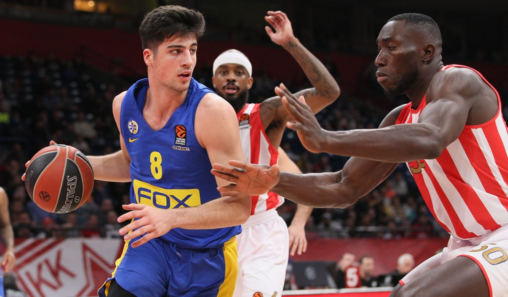

Professional Basketball
Learn about the professional leagues around the world and how they shaped the world with basketball.
Many Leagues Around the World
Basketball is not just a game for some. It is actually a profession! It was shocking to me too. There are many leagues around the world, one including the National Basketball Assosiation(NBA), the Womens National Basketball Association, Euroleague, CBA, PBA, and many more around the world. For more information on these assosiations go to: https://en.wikipedia.org/wiki/List_of_basketball_leagues. To get into a professional you may need quite a resume to be qualified. For instance, it would be great if you played your entire life, joined club or school basketball, and played in college. After college, players get to choose or get selected to play in a league. Depending on the ranking and qualification of a player, the player gets to play professional basketball for about 20 years! Most players earn a lot more than your typical job and can can retire after one year... but that depends on the player.
Basketball is Entertaining
Like I said in the previous page, the game of basketball wasn't popular, hence, not a lot of the leagues listed above were created until the rise and popularity of the NBA. Right before the mid 80's-00's period, the NBA grew because of basketball players Magic Johnson and Larry Bird. In fact, basketball grew because of these iconic players and the broadcasting of games. Once Michael Jordan showed up, the world changed. Basketball became a cultural phenomenom, and it was basically a religion. Kids played on the streets using a food basket and using whatever item to shoot through them. Since games were broadcasted, people around the world witness the best basketball players which influenced others to copy their moves and become that player or better. From there, it influenced other countries to make their own league for their own audience and to make their own money. Basketball was entertainment.
Highlights
View different NBA basketball era's:
- 70's era: https://www.youtube.com/watch?v=9tMmaXRSeL4
- 80's era: https://www.youtube.com/watch?v=k7bWc1qTWnA&ab_channel=BasketballJones48021
- 90's era: https://www.youtube.com/watch?v=E7mMhPNpSiM&ab_channel=nbaworthy
- 2000's era: https://www.youtube.com/watch?v=juBiQUjwx7c&ab_channel=kyle_arcilla
- 2010's era: https://www.youtube.com/watch?v=t22flliJLTQ&ab_channel=NBA
View Leagues around the world:
- PBA: https://www.youtube.com/watch?v=YpzRSdDXIe4&ab_channel=KMBasketball
- CBA: https://www.youtube.com/watch?v=nDQBILZ94_M&ab_channel=ChineseBallerVisionHighlight
- Euroleague: https://www.youtube.com/watch?v=2CEcXii6Lg4&ab_channel=EUROLEAGUEBASKETBALL
- WNBA: https://www.youtube.com/watch?v=3hHSUpx5IaY&ab_channel=ESPN
- FIBA: https://www.youtube.com/watch?v=zXbFAdN2DTc&ab_channel=ESPNESPNVerified